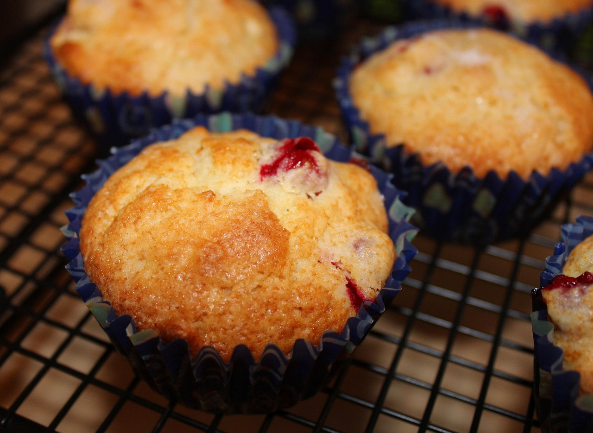

Home
Cranberry muffins

Description
Soft, tender, and bursting with the vibrant tartness of fresh cranberries, these cranberry muffins
are a perfect balance of sweet and tangy. Each muffin is infused with a hint of orange zest, adding a
refreshing citrus note that complements the natural sharpness of the cranberries. The slightly crumbly
texture gives way to a moist and fluffy interior, while a light sprinkle of sugar on top adds a touch
of sweetness and crunch. Ideal for breakfast or as a snack, these muffins are a cozy, flavorful treat
for any time of day.
Ingredients
- 1 ½ cups all-purpose flour
- 3 teaspoons baking powder
- ¼ teaspoon salt
- ¼ cup white sugar or more to taste
- ¼ cup vegetable oil
- 1 large egg, beaten
- 1 cup orange juice
- 1 tablespoon orange zest
- 1 ½ cups fresh cranberries
Steps
- Gather all ingredients. Preheat the oven to 400 degrees F (200 degrees C). Line a 12-cup muffin
pan with paper liners.
- Sift flour, baking powder, and salt into a bowl.
- Beat sugar and vegetable oil in a large bowl with an electric mixer until light in color and well
blended, about 3 minutes. Add egg and beat until smooth. Mix in orange juice and zest.
- Add flour mixture in batches, stirring until just combined. Fold in cranberries.
- Spoon batter into the prepared muffin cups, filling each 2/3 full.
- Bake in the preheated oven until tops until tops are golden and a toothpick inserted in the center
comes out clean, 20 to 25 minutes. Cool muffins in the pan briefly before transferring to a wire rack to
cool completely.